Sabes dibujar,
¿y ahora qué? –
Las capacidades técnicas del arte para videojuegos
Casilda de Zulueta | @GatdeSoia
Universidad La Salle Noroeste | 4 de abril 2022
¿Quién soy?
- Casilda de Zulueta (Casi)
- Artista técnica y animadora
- Más de 6 años haciendo videojuegos profesionalmente
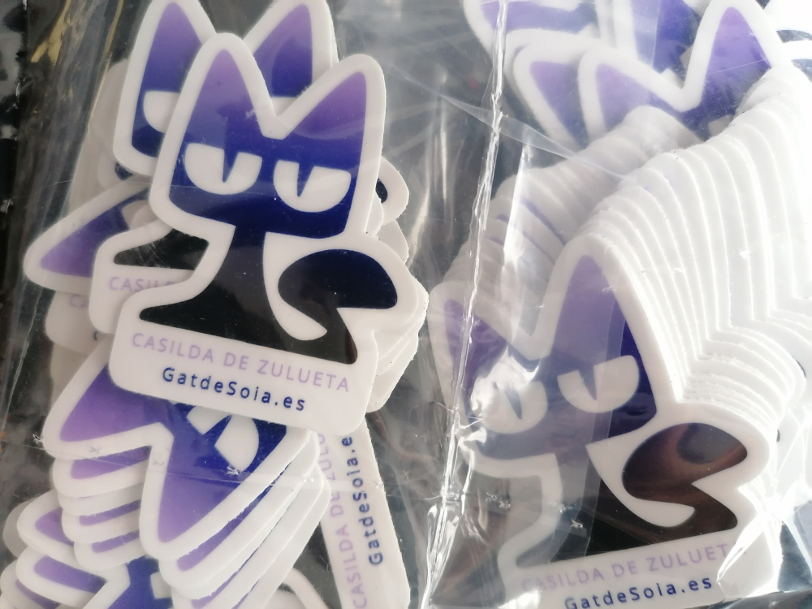
Experiencia académica
- Grado de Ciencias Sociales en Comunicación Audiovisual
- Universitat Politècnica de València
- Intercambio Erasmus
- Köln International School of Design
- Máster de Artes en Desarrollo y Análisis de Videojuegos
- Cologne Game Lab

13 Rosas (2022) Casilda de Zulueta
Flying Sheep Studios
- Artista 3D
- Juegos HTML5
- Edición de vídeo
- Más de 30 juegos en 3 años
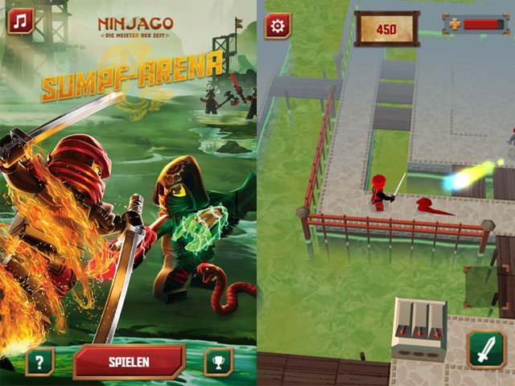
Lego Ninjago: Sumpf-Arena (2017) Flying Sheep Studios
Autónoma
- Artista técnica
- Animadora
- Profesora
- Mars Vice
- Rho Labyrinths
- Enclosed Encounter
- Fantastic Foe
- Maniacs
- Achtung Autobahn
- The 7th Axe
- Brainseed Factory
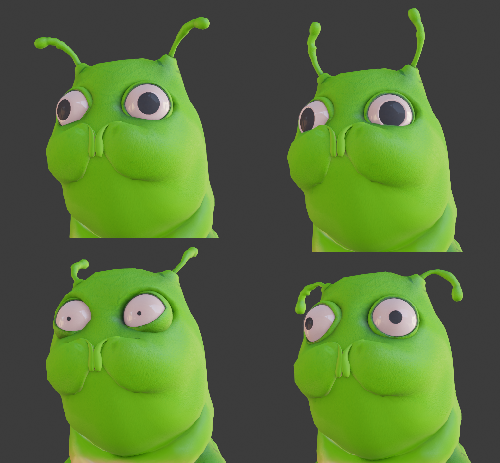
Enclosed Encounter (en desarrollo) Fantastic Foe
Haciendo cosas porque me da la gana
- Arte 3D
- Ilustración
- Vídeo
- Diseño web
El objetivo de esta charla
- Introducción a la importancia de los aspectos técnicos del arte para videojuegos
- Consideraciones sobre trabajar de forma metodológica en los procesos artísticos
- Recordatorio de que vuestro valor como persona no depende de vuestra productividad, que merecéis descansar y hacer cosas simplemente porque os apetece hacerlas, y que el crunch (trabajar más horas de lo normal, de continuo) es una m*****
Pregunta #1:
¿Qué tipo de artistas queréis ser?
a. Diseñador/a de concepto
b. 2D
c. 3D
d. UI
e. Otro tipo
f. No me interesa
El objetivo de vuestro trabajo
- Comunicar algo a alguien (jugador/a)
- Comunicar algo a la máquina (computadora/consola/celular)
El arte es para que una audienciaencuentre significado
- Es atractivo
- Es repugnante
- Tiene pinchos, de manera que entiendo que me hará daño si entro su zona de colisión
- Es amarillo, así que sé que puedo ir por allí
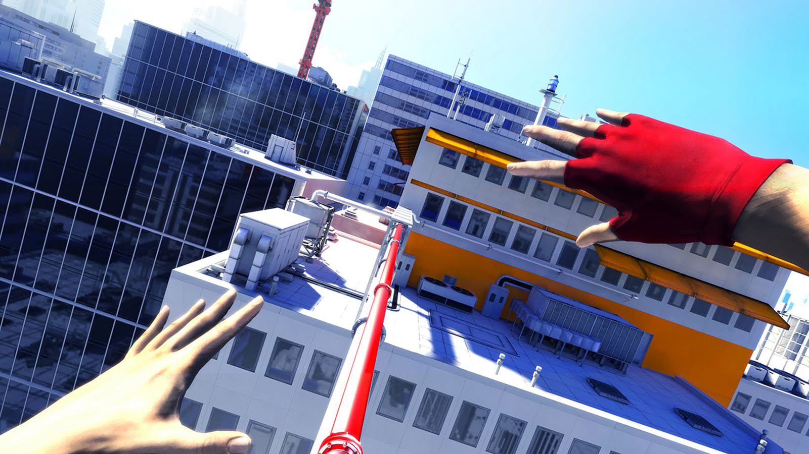
Mirror's Edge (2008) DICE
El asset es para que una máquina lo interprete (renderice)
- El dispositivo objetivo restringirá cuántos polígonos podemos usar, el tamaño de los atlas, los FX disponibles, el espacio de color
- El POV (punto de vista) y el tamaño de la pantalla restringen el nivel de detalle
- Cuanto más grandes tus archivos, más espacio ocupará el juego
- Tú, artista, eres la persona responsable de tu asset

League of Legends (2009-2022) Riot Games
La pregunta que siempre hay que hacerse:
¿Para qué estoy haciendo esto?
- Estoy haciendo esta silla para que el PJ se pueda sentar
- Estoy reusando el material de la mesa a juego
- Estoy haciendo la altura del asiento en una medida universal para este juego
- Estoy posicionando el pivote a la misma distancia del borde del asiento que el resto de sillas
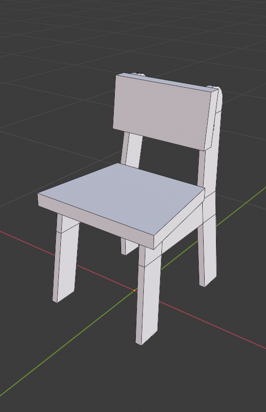
La técnica detrás del arte
¿Convenciones de nomenclaturas?
- chair_FINAL.fbx
- chair_FINAL-02_de verdad lo prometo.fbx*
- Cube.007
- assets-34.blend
- wood.png
Convenciones de nomenclaturas
- Chair 03.fbx
- Chair 03
- Chairs.blend
- Wood 07.png
- SM_Chair_03.fbx
- SM_Chair_03
- SM_Int_01.blend
- D_Wood_07.png
- *Inglés como lengua de desarrollo.
¿Estructura de directorios?
- Project
- Animations
- Character
- props
- Assets
- Character
- Animation
- Textures
- Carpeta Nueva
- texture
- Animations
Estructura de directorios
- Project
- Characters
- Animations
- NPCs
- Materials
- Textures
- Meshes
- Materials
- Player
- Materials
- Textures
- Meshes
- Materials
- Characters
- Env
- Materials
- Textures
- Meshes
- Materials
- UI
- Materials
- Textures
- Materials
- Props
- Materials
- Textures
- Meshes
- Materials
Lista de assets
| Asset | Working File | Type | Material |
|---|---|---|---|
| SM_Chair_01 | SM_Int_01 | seat | M_Wood_02 |
| SM_Chair_02 | SM_Int_01 | seat | M_Wood_03 |
| SM_Chair_03 | SM_Int_01 | seat | M_Wood_07 |
Almacenamiento en la nube
- Archivos de edición (.blend, .ma, .psd, .afdesign, .spp)
- Tanto los archivos en local como los que están en la nube son iguales, están sincronizados en vivo
- Los archivos que no uses no ocupan espacio en el disco local
- Todas las modificaciones se pueden retribuir en el historial del archivo, hasta cierto punto atrás en el tiempo (normalmente, 30 días)
- Google Drive, OneDrive, Dropbox, Sync
Aprende lo básico de control de versiones
- Archivos del proyecto (cualquier cosa que va en las carpetas del motor, salvo excepciones que no os importan como artistas)
- El archivo se guarda solo en local...
- ... hasta que lo asignas al servidor
- Todas las versiones se pueden recuperar, sin importar cuánto tiempo haya pasado
- Commit
- Pull
- Push
- Github, Bitbucket, Plastic SCM
Pipeline
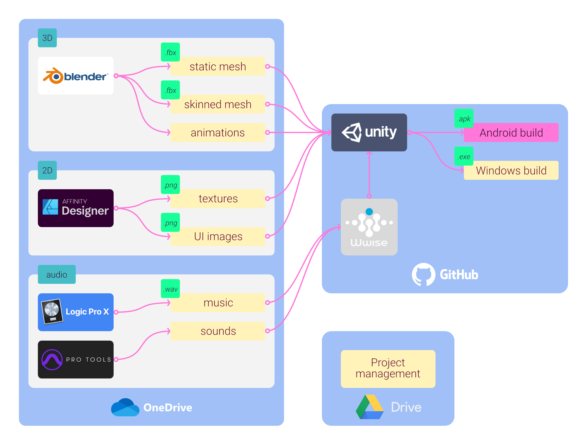Diseño de concepto
Diseño de concepto
- Numerad los conceptos
- "Me gusta el nº 3, ¿puedes hacerlo más redondo como en el nº7?"
- Ponedle nombre a las capas y los grupos
- Ah, sí, Capa 24, esta es la que estaba buscando
- Mantened las proporciones desde todas las vistas
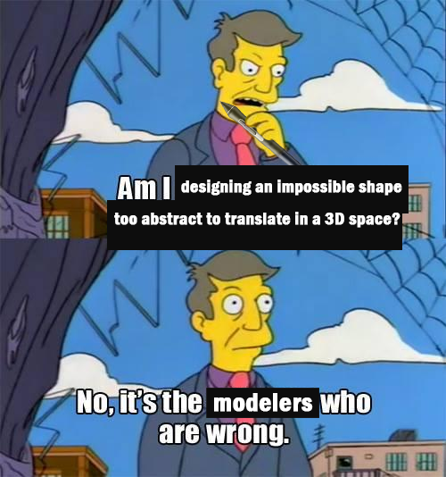
Diseño de concepto
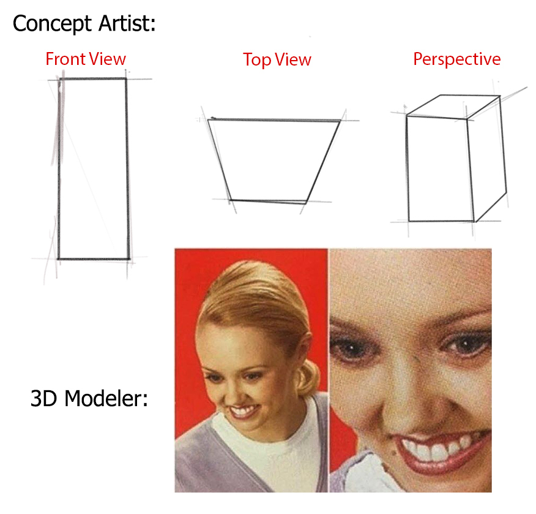Diseño de concepto
- Usar referencias es obligatorio
- La creatividad deviene de la manera en la que ensamblas los pedazos de realidad que tu juego está representando
- Sin referencias, los estereotipos y prejuicios se anteponen en tus diseños

Blasphemous (2019) The Game Kitchen
Diseño de personajes
- Los personajes se mueven
- ¿Tienen sentido las articulaciones?
- ¿Pueden doblar las rodillas o los codos con esa pieza de armadura?
- Conceptualizad expresiones extremas de cara y cuerpo
-
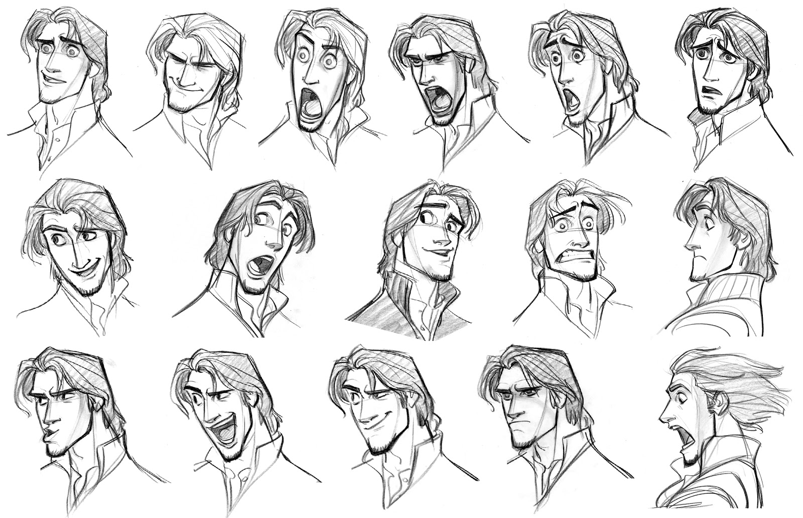
Tangled (2010) Disney
Diseño de atrezo y escenarios
- Aprended dibujo técnico
- No temáis hacer trampa. Usad todas las herramientas a vuestra disposición:
- Esbozad escenarios en Blender y trazad por encima del render
Arte 2D
Resolución
- Las dimensiones de todas las imágenes están en potencia de 2
- 2, 4, 8, 16, 32, 64, 128, 256, 512, 1024, 2048, 4096, 8192
- Pero no tienen porqué ser cuadradas
- Por ejemplo: 128 x 32 px, 256 x 16 px
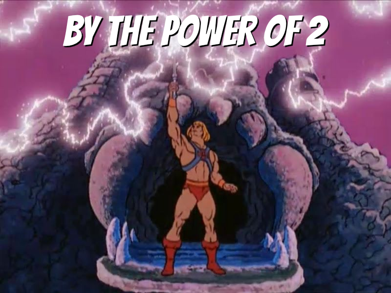
Resolución
- Puede ser un solo asset...
- ... o una colección de assets distribuidos en un solo atlas
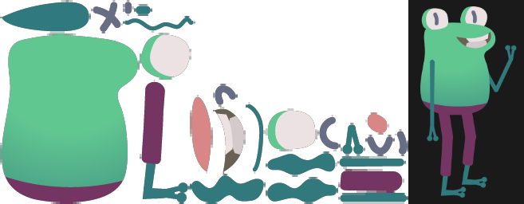
Moskito Beat (2016) Superglue Games
Resolución
- Tiene que ser lo suficientemente grande para que no se amplíe en el juego
- Si no, la imagen se emborrona*
- Tiene que ser lo suficientemente pequeña para no malgastar recursos
- * El pixel art tiene la gran ventaja de almacenarse en assets diminutos, ya que el escalado es parte de la estética
Reutilizar

Super Mario Bros. (1985) Nintendo
Arte 3D
Modelado
Escala
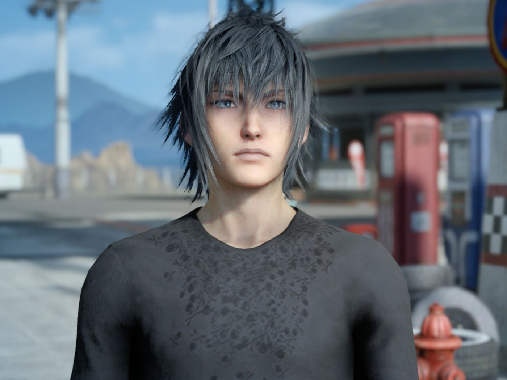
Final Fantasy XV (2016) Square Enix

Spyro the Dragon (1998) Insomniac Games
Escala
- El problema de los triángulos diminutos:
- La computadora tiene que calcular la posición de todos esos triángulos, aunque sea parar renderizar un solo píxel, o ninguno
- Cuando se juntan demasiados triángulos pequeños, el renderizado es serrado (aliasing)
LODs (nivel de detalle)
- Mallas
- Soluciona el malgasto de recursos de computación de los triángulos diminutos
- Texturas (MipMaps)
- Soluciona los problemas de aliasing y patrones Moiré
- Huesos y framerate
- Soluciona el peso de tener demasiadas skinned meshes dentro de campo
LODs (nivel de detalle)
- Encontrad el equilibrio:
- Cuantos más assets haya que cargar, más pesado será el programa para la memoria
- Cuantos más trángulos haya que renderizar, más grandes sean las texturas y más huesos tengan los objetos animados, más pesado será para la GPU
Diseño modular
- Documentad y aplicad medidas estrictas:
- ¿Cuál es la altura del asiento de las sillas de este juego para que un personaje se pueda sentar?
- ¿Cuál es la medida mínima de un pasillo para que los personajes puedan atravesarlo?
- ¿Cómo de alta es una pared? ¿Hasta dónde llega el techo?
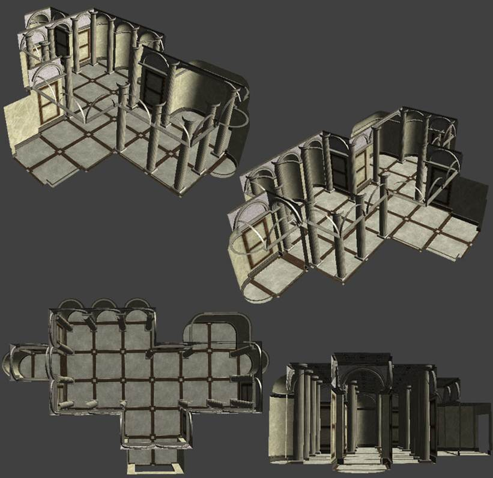
Skyrim (2011) Bethesda Game Studios
Visibilidad
- Si un trocito de la malla es visible, toda la malla está siendo calculada
- ¿Cuánto debería subdividir una casa?
- ¿Vas a acercarte y abrir la puerta? Trocea
- ¿Es un objeto en la distancia? Haz un plano con forma de casa y ponle una textura
Texturas y materiales
Tamaño de texturas
- Cuanto más pequeñas, mejor
- Cuantas menos texturas por material, mejor
- Diffuse map: RGB(A)
- PBR map: RGBA
- Normal map: RGB

Espacio UV
- Dos mapas UV:
- Main UVmap
- Lightmap
- La disposición de las caras no puede coincidir entre mapas
Instancias de material
- Cuantos menos materiales, mejor. Aún así, hay que equilibrar entre:
- Atlas muy grandes con muchos assets usando el mismo material
- Mapas de textura pequeños, con lo cual hay más materiales en la escena
- Consideraciones: repeticiones y proyecciones a tres planos
- Evitad mallas con más de un material
- Es mejor duplicar y voltear una cara que forzar el render a doble cara
Exportar
Aplica las transformadas
- Rotación a 0,0,0.
- Escala 1,1,1.
Pon el pivote donde pueda verlo
- El pivote va donde corresponde:
- en el rincón inferior de un asset de muro
- en el centro de una pelota de baloncesto
- en el centro del punto de rotación, y está alineado con el eje principal
- a los pies de un bípedo, coincidiendo con las coordenadas de la armadura
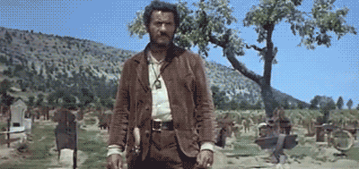
Parámetros principales de exportación
- De Blender a Unity:
- Rota la malla X -90°. Aplica la rotación
- Rótala X 90°. No apliques esta transformada
- "Apply Scalings: FBX Units Scale"
- Eje hacia adelante: -Y Forward
- Eje hacia arriba: Z Up
- De Blender a Unreal:
- El proyecto debe estar a escala 0.01 (una unidad equivale a 1cm)
- Eje hacia adelante: Y Forward
- Eje hacia arriba: Z Up
- https://github.com/mrven/Blender-Asset-Creation-Toolset
Animación
Rigging
Eje principal de rotación de los huesos
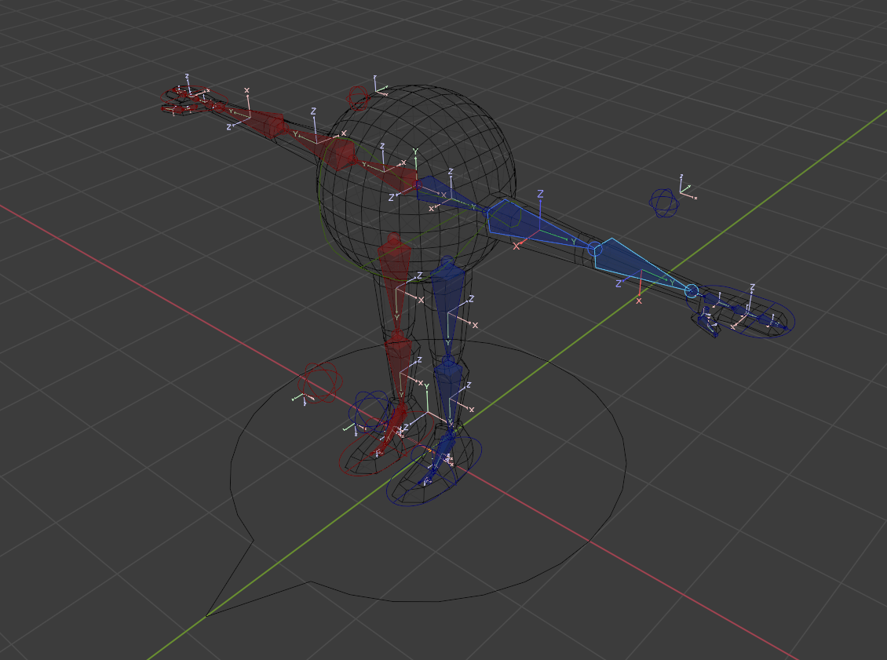Euler versus cuaternios
- Euler (X,Y,Z)
- Cuaternios (X,Y,Z,W)
- > 180°
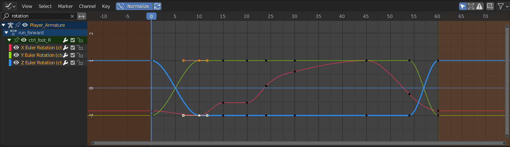
Los controladores y drivers son
los mejores amigos de tu animador/a
- Automatiza:
- La rotación de las piernas con cinemática inversa (IK) en los pies
- Cerrar una mano con diferentes incrementos de rotación en cada falange
- Deformación automática de la malla con ayuda de los shape keys
Animación
Diseñad la lógica de las animacionescon una state machine
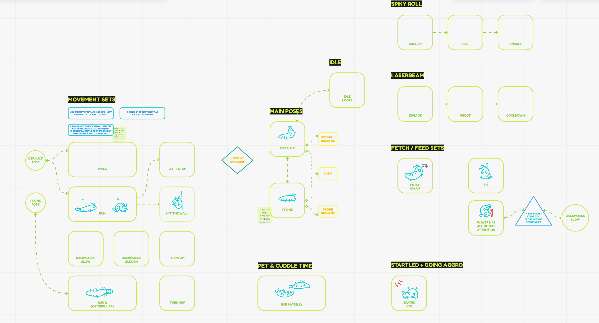Haced bocetos antes de pulir